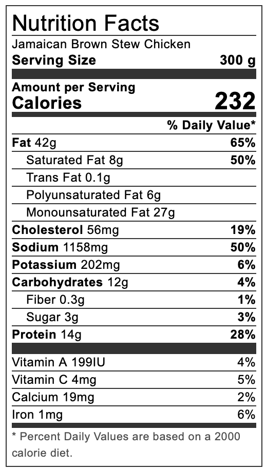

Authentic Jamaican Brown Stew

An Authentic Jamaican Stew
This is a caribbean dish that's sure to please any spice lover! This authentic Jamaican brown stew chicken recipe is braised in a savory sauce and can be served with my
Jamaican rice and peas.
or any other side dish that you wish!
Simple ingredients made delicious
Braised chicken in a savory sauce, spiced with the flavors of the carribean and lightly fried until golden and crispy, then slathered in a mouth watering finishing sauce. You'll be kicking yourself for not making a double serving!
Ingredients
- 771 g. Chicken
- 1 Small yellow onion Chopped
- 2 Stalk scallionChopped
- 2 Garlic clovesCrushed
- 1/4 REd bell pepperSliced
- 1 Small tomatoDiced
- 1/4 Scotch bonnet pepperSeeds removed and finely chopped
- 4 g Grated ginger
- 4 Sprigs of thyme
- 5 Pimento berries(allspice)
- 1 1/2 tbsp. All purpose/chicken seasoningSalt free(see notes)
- 1 1/2 tsp Salt
- 1 tsp Browning sauce
- 2 tbsp ketchupOptional
- Chicken cube stock
- 3-4 tbsp Cooking oil
- 355 ml Water
Steps
- Dissect and clean the chicken (remove skin and fat) and wash it in water with vinegar and lime/lemon juice. Drain away as much excess water from the chicken, dry and chop into small pieces.
- Season the chicken with the chicken/all-purpose seasoning, ½ tsp of salt and the browning sauce. Add the onion, garlic, scallion, scotch bonnet pepper, thyme, pimento berries, and ginger, or use one ½ tbsp of green seasoning (see note). Rubbing all the ingredients into the chicken ensures all pieces are well coated. (For maximum flavour, leave to marinate for at least an hour).
- Separate the onion, thyme, scallion, garlic and pimento from the chicken, which may be painstaking, so don't try to separate every piece. If you are using the green season, you bypass this step.
- Heat oil in a large enough pot over medium heat. Once the oil is hot, add the chicken brown on all sides. Turn the heat down if needed so the chicken cooks before all sides are brown.
- Pour away the oil leaving about a tablespoon. Add the water, onion, scallion, garlic, thyme, pimento, scotch bonnet (ingredients you separated earlier), bell pepper, tomato, salt, chicken cube stock and ketchup if you use it. Cover the pot and bring to a boil. (At this point, taste the sauce if flavoured to your liking).
- Cook for about 10 minutes. Add the chicken. Reduce the heat to low, cover and simmer for another 10 minutes.
Notes
- Use more scotch bonnet if you like your food spicy.
- The all-purpose seasoning I use is salt-free. Consider using less if yours have salt.
- The use of ketchup in this recipe is to help thicken the brown stew sauce and add a hint of sweetness. If you prefer not to use ketchup, use a small amount of cornstarch to help thicken the sauce and a tiny bit of brown sugar or honey for the sweet taste.
- If you want to avoid the painstaking task of separating the onion, scallion, garlic, thyme etc., from the chicken after you marinate it, use a blended green season, which I have a complete recipe for. But you will still need chopped onion, garlic etc. when making the brown stew sauce.
- Instead of water, you could use chicken broth; this way, you don’t have to use chicken cube stock. Jamaicans usually use maggie cube stock.
Nutiriton
